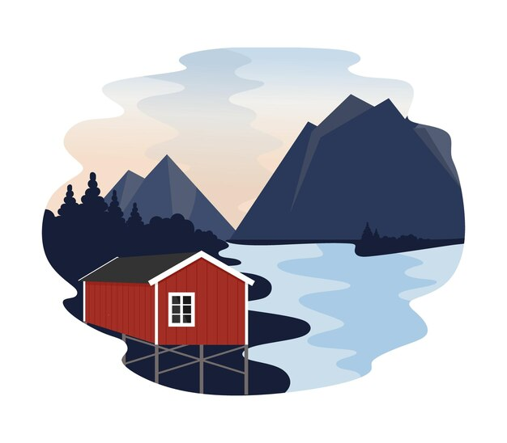

The data lakehouse architecture has emerged as a pivotal solution for organizations seeking to harness the power of both data lakes and data warehouses. At the heart of this innovative approach are three open-source projects: Apache Hudi, Delta Lake, and Apache Iceberg. Each of these projects plays a unique role in enabling efficient data management, processing, and analytics within the data lakehouse framework. However, the choice among them can be challenging due to the distinct features and capabilities they offer. This article aims to provide a comprehensive comparison of these three projects, focusing on their suitability for modern data lake platforms that require robust support for update-heavy workloads and continuous table management.
Understanding the Core Projects
Hudi
Apache Hudi is an open-source data management framework designed to provide reliable and fast data ingestion, updates, and deletion capabilities over large datasets. It introduces the concept of "upserts" (updates and inserts) and "deletes" in a way that is both efficient and scalable, making it ideal for applications that require real-time data processing and analytics.
Delta Lake
Delta Lake is an open-source storage layer that brings ACID transactions to Apache Spark and big data workloads. It ensures data reliability and integrity by providing features like schema enforcement and evolution, transactional writes, and time travel (point-in-time recovery). Delta Lake is particularly well-suited for applications that demand high reliability and consistency across distributed systems.
Apache Iceberg
Apache Iceberg is a table format for large, distributed datasets designed for efficiency and performance. It provides a rich set of features including partitioning, bucketing, and indexing, which enable efficient querying and analysis of large datasets. Iceberg is optimized for use with Apache Spark and other big data processing frameworks, making it a powerful tool for data warehousing and analytics.
Beyond Traditional Comparisons
While many existing comparisons focus on these projects as table/file formats for traditional append-only workloads, it's crucial to consider their broader implications for modern data lake platforms. These platforms often require not only the ability to ingest and store vast amounts of data but also to manage and analyze that data efficiently, especially in environments where data is frequently updated or deleted.
The Rise of OneTable
In the evolving landscape of data lakehouse technologies, a new project has emerged that seeks to address the challenges of choosing between different formats: OneTable. Co-launched by Microsoft, Google, and Onehouse, OneTable offers seamless interoperability between Apache Hudi, Delta Lake, and Apache Iceberg. This means users no longer have to commit to a single format or face the complexities of integrating multiple formats into their data architectures.
OneTable represents a significant development in the open-source data ecosystem, promising to unlock new possibilities for data management and analysis. Its launch was covered by VentureBeat, highlighting its potential to transform how organizations approach data lakehouse implementations.
As OneTable transitions to the Apache Software Foundation and finalizes its name change, it stands as a testament to the collaborative spirit of the open-source community and the ongoing innovation in data management technologies.
Conclusion
Choosing the right technology for your data lakehouse implementation depends on your specific requirements, including the nature of your data workloads, the scale of your data, and your organization's technical capabilities. By understanding the strengths and limitations of Apache Hudi, Delta Lake, and Apache Iceberg, and considering the emerging solutions like OneTable, you can make an informed decision that aligns with your data strategy and objectives.
The data lakehouse ecosystem is rapidly evolving, and staying abreast of the latest developments and technologies is essential for leveraging the full potential of your data assets. As we continue to explore and innovate in this space, the future of data management and analysis looks brighter and more flexible than ever.